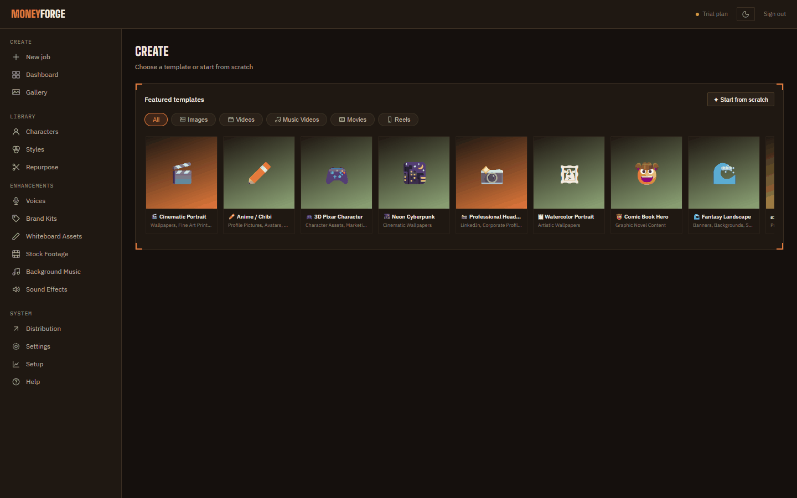
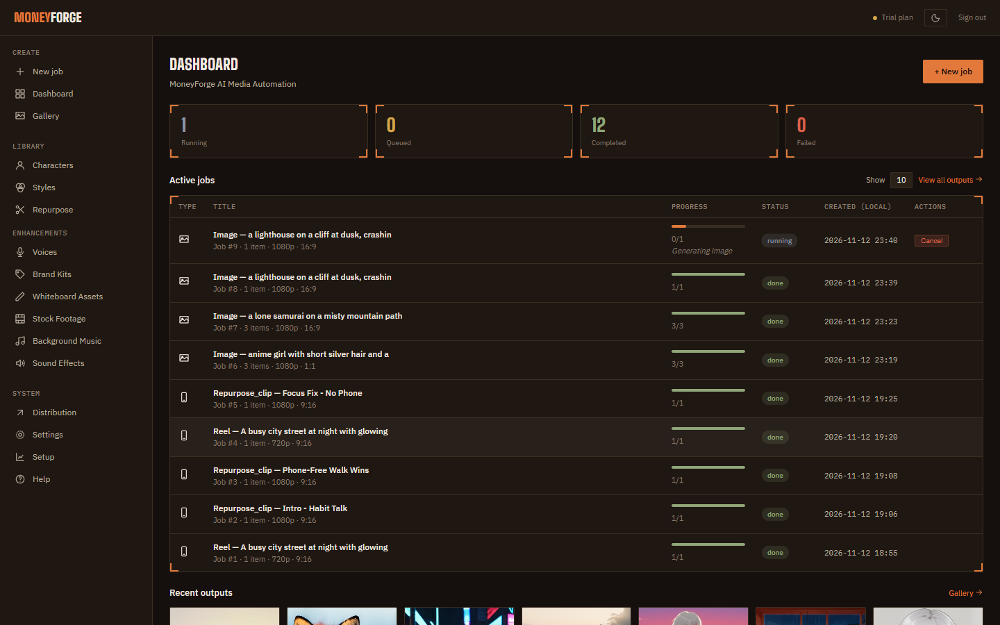

Making things
Create basics
Every image, video, movie, music video and reel starts on the Create page. The controls are shared; each media type adds its own card.
Step 1: pick a template or start from scratch
Create opens with Featured templates, filtered by tabs (All, Images, Videos, Music Videos, Movies, Reels). A template fills in the media type, style and sometimes a fixed aspect ratio (for example "Fixed 9:16 … Required by this template"). Click ✦ Start from scratch to set everything yourself.

Step 2: the settings panel
| Setting | What it does |
|---|---|
| Media type | Image, Video, Movie, Music video or Reel. Each one is explained on its own page in this guide. |
| Aspect ratio | 16:9 (YouTube), 9:16 (TikTok, Reels, Shorts), 1:1, 4:5, 3:4, 2:3, 3:2, 4:3. |
| Image quality | For images, reels and lyric-card music videos: 720p, 1080p (default), 2K, 4K, 8K. 4K and 8K are upscaled to that full size after generation and need Pro. |
| Video quality | For video, movie and AI music videos: 480p (default) or 720p. 720p needs Pro and works at 16:9, 1:1 or 9:16. Export resolution (Native, 1080p, 4K with Pro) resizes the finished video. |
| Style preset | A look, such as Cinematic realism or Anime / manga. See Styles. |
| Character | Tick up to 4 saved characters, or drag in a reference photo. See Characters. |
Step 3: write the prompt
Describe what you want to see: subject, setting, lighting, camera. For example: "a lone samurai on a misty mountain path at dawn, wide shot, soft light".
Switch to Batch ✦ to make many at once: paste one prompt per line into Paste multiple prompts, click Split into rows, or add rows with + Add row.
Click Generate ✦. The job goes into the queue on the Dashboard, and the result lands in the Gallery.
Advanced (collapsed by default)
- GPU concurrency (image and reel only): Off (safest), Adaptive, or Fast (risky). Lets small jobs share the card at a slightly lower resolution. Video-type jobs always run alone.
- Captions and caption style (reels and music videos). Styles marked 🎤 highlight each word as it's spoken.
- Brand kit: your logo, watermark, intro and outro. See Brand kits.
- Background music (reel, video, movie): pick a track from your library or Auto-match by keyword, and set Music loudness (dB). Greyed out until your music library has at least one track.
- Auto-distribute on completion: post to connected accounts within about 5 minutes of the job finishing. See Posting & scheduling.
Watching progress
The Dashboard shows the queue, live progress for running jobs, and your 12 newest results. Each job has Cancel and, if something failed, Retry failed. A retried movie continues from the last finished scene rather than starting over.

Home · User Guide · Support · Privacy Policy · Terms of Service